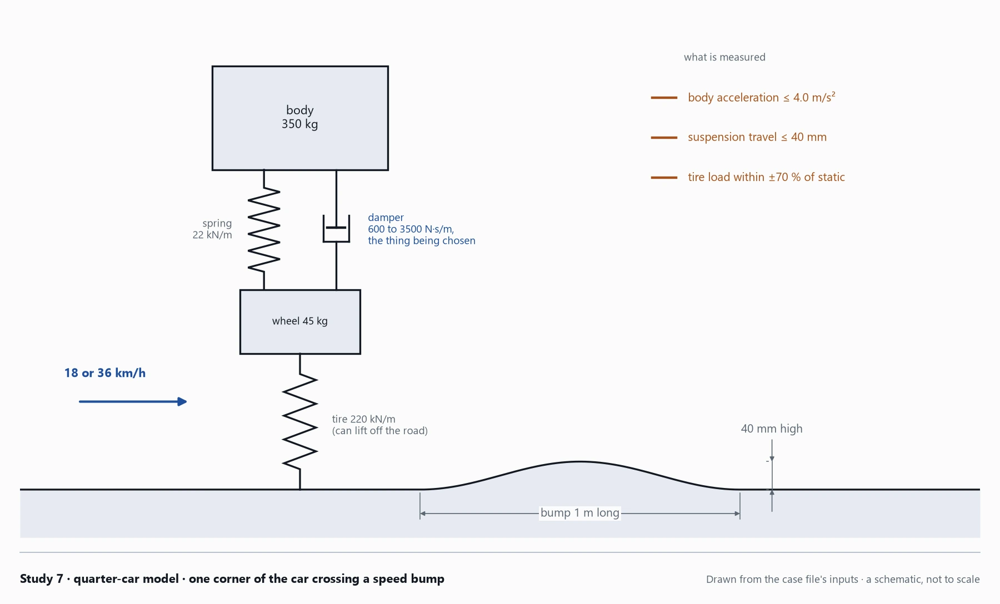
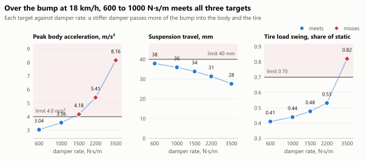
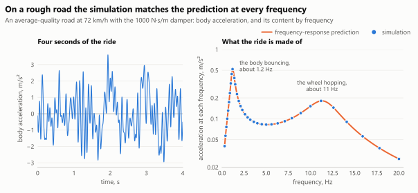
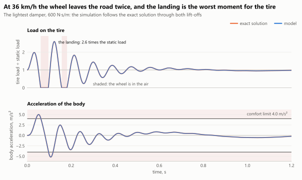

The Question
For a compact car's front corner, which damper rates between 600 and 3500 N·s/m meet the targets for ride comfort, suspension travel and tire load? I tested it over a speed bump and over a rough road.
The Answer
Over a 40 mm speed bump at 18 km/h, anything from 600 to 1000 N·s/m meets all three targets. At 1500 it just misses the comfort limit, 4.18 against 4.0 m/s², and at 3500 the tire load goes over.
Over the same bump at 36 km/h, nothing works. The wheel leaves the road at every damper setting, for 32 to 59 ms, and comfort and road holding fail across the board. A damper change can't fix that. It needs a lower speed, a softer tire or a gentler bump.
Adding a bump stop makes light damping worse. At 600 N·s/m the suspension compresses past the 40 mm gap to the bump stop. With the stop in the model, the peak body acceleration more than doubles, from 5.2 to 11.3 m/s², and the stop still runs past its 8 mm of stroke at 2.8 kN against a 2.5 kN rating. From 1000 N·s/m up, it stays within its rating.
On a rough road at 72 km/h, no damper rate meets the comfort target, while travel and tire load need at least about 1500. Those pull in opposite directions, so the real fix is a different spring rate.
Weighted the way people actually feel vibration (ISO 2631-1), the rough-road ride rates as uncomfortable at 1000 N·s/m (1.01 m/s²) and gets worse with more damping, up to very uncomfortable at 3500 (1.64 m/s²). The raw, unweighted acceleration overstates it by 10 to 29 %.
Why It Matters
A damper has two jobs that pull against each other. A soft one lets the body float over bumps, which is comfortable, but lets the wheel bounce, which hurts grip and uses up suspension travel. A stiff one holds the wheel on the road but passes every bump into the body. Choosing a rate means finding the range where comfort, travel and tire load are all acceptable, and sometimes finding that there isn't one.
The quarter-car model is the standard first tool for this: one corner of the car, with the body on a spring and damper, on a wheel, on a tire. It's simple enough to check exactly, which makes it a good place to show what happens when a model is pushed outside what it can represent.
The Model
- Vehicle corner
- 350 kg of body on the suspension, a 45 kg wheel assembly, a 22 kN/m spring and a 220 kN/m tire. All values are at the wheel.
- Damper
- Five rates from 600 to 3500 N·s/m.
- Speed bump
- 40 mm high and 1.0 m long, smoothly rounded, crossed at 18 km/h and at 36 km/h.
- Rough road
- An ISO 8608 class C road (an average-quality surface) at 72 km/h, built from 198 sine waves covering 0.2 to 20 Hz.
- Tire models
- A linear spring that can pull as well as push (valid only while the wheel stays down), and one that can lift off the road.
- Bump stop
- A 300 kN/m stop that engages after 40 mm of compression.
- Targets
- Peak body acceleration at most 4.0 m/s², suspension travel at most 40 mm, tire load within ±70 % of static. On the rough road, an average (RMS) body acceleration of at most 1.0 m/s².
- Tools
- My own Python model solved with SciPy, and the same car built from standard library components in OpenModelica.

The case file: recorded assumptions, limits and inputs
This is the study's own record, written before the run and saved with it, in the shorthand of the case file.
Linear 2-DOF quarter car crossing a 40 mm x 1.0 m (1 - cos) speed bump at 5 m/s (18 km/h); wheel-rate damping swept from 600 to 3500 N.s/m against peak body acceleration, suspension travel, and dynamic tire load requirements.
Assumptions, and How Each Is Checked
- Linear spring, damper, and tire; parameters are wheel rates (motion ratio already applied).
- Point-contact tire with no tire damping; the tire never leaves the road (checked: no_wheel_lift).
- Coordinates from static equilibrium; gravity cancels in the linear model.
- Rigid body above one corner (no pitch/roll coupling, no seat or occupant dynamics).
- Suspension travel stays inside the linear range (no bump-stop contact); REQ-QB2 bounds it.
Limits
- Synthetic parameters; not calibrated to any vehicle.
- Peak acceleration is unweighted; ISO 2631 frequency weighting is not applied.
- Checks establish numerical verification and model-validity limits only; no test data.
Inputs
| Input | Value |
|---|---|
| sprung_mass_kg | 350 |
| unsprung_mass_kg | 45 |
| suspension_stiffness_N_per_m | 22000 |
| damping_N_s_per_m | 1500 |
| tire_stiffness_N_per_m | 220000 |
| road | bump |
| speed_m_per_s | 5 |
| bump_height_m | 0.04 |
| bump_length_m | 1 |
2-DOF quarter car with a tire that can leave the road, crossing a 40 mm x 1.0 m (1 - cos) bump at 10 m/s (36 km/h); wheel-rate damping swept from 600 to 3500 N.s/m against peak body acceleration, suspension travel, and dynamic tire load requirements.
Assumptions, and How Each Is Checked
- Linear spring and damper; parameters are wheel rates (motion ratio already applied).
- Point-contact tire that pushes but never pulls: load = max(0, W + kt (zr - zu)); no tire damping, no tread radius (the contact point follows the road profile).
- Coordinates from static equilibrium; gravity acts explicitly while the wheel is airborne.
- Rigid body above one corner (no pitch/roll coupling, no seat or occupant dynamics).
- Suspension travel stays inside the linear range (no bump-stop or rebound-stop contact); REQ-QB2 bounds it.
Limits
- Synthetic parameters; not calibrated to any vehicle.
- Peak acceleration is unweighted; ISO 2631 frequency weighting is not applied.
- A point-contact tire ignores the tire's footprint, which smooths a short bump; the lift-off is likely overstated for a real tire.
- Checks establish numerical verification only; no test data.
Inputs
| Input | Value |
|---|---|
| sprung_mass_kg | 350 |
| unsprung_mass_kg | 45 |
| suspension_stiffness_N_per_m | 22000 |
| damping_N_s_per_m | 1500 |
| tire_stiffness_N_per_m | 220000 |
| road | bump |
| speed_m_per_s | 10 |
| bump_height_m | 0.04 |
| bump_length_m | 1 |
| tire_model | liftoff |
How It Works
The model is two masses and three springs and dampers, solved in time as the wheel crosses the bump or runs along the road. For the lift-off cases the solver stops exactly at the instant the tire load reaches zero, switches to the airborne equations, and stops again at the instant of landing.
The same car is built a second time in OpenModelica, a different tool with a different solver, from its standard library of masses, springs and dampers. Two tools that share no code agreeing is strong evidence neither has a bug in how the equations are set up.



How I Checked It
- Against an exact solution. Over the speed bump, the simulation matches an independent exact solution of the same equations, and the energy going in balances the energy stored and dissipated. All 30 checks pass.
- Against a second tool. The OpenModelica model agrees with the Python model to about one part in a million.
- The lift-off. I built an exact solution for the tire that can leave the road independently, using matrix exponentials within each phase and root-finding for the switch times. It agrees on those times within a tenth of a nanosecond and on the motion to about two parts per billion of the bump height.
- The bump stop. It's one more switch in the same exact solution. The model and the reference agree on every time the stop engages and releases, and on the motion to a few parts per billion of the bump height.
- The comfort weighting. My ISO 2631-1 weighting filter matches the standard's own table within 0.1 %. My first version came out at exactly double the table, and that comparison is what caught it.
- The rough road. The simulated vibration levels match the prediction from the frequency response within one part in ten billion.
What I Caught Along the Way
- A wheel that left the road. I first ran the bump at 36 km/h. Every numerical check passed, but the check on whether the wheel stays on the road failed at every damper rate, with the tire load swinging to as much as 1.7 times static. A linear tire model can't handle a wheel leaving the ground, so I didn't report any of those results as a pass or a fail. I kept that run and added a case at 18 km/h.
- What the better model showed. Then I built the model that check was asking for, a tire that can leave the road, and wrote down five predictions first. It turned out the linear model had overstated the peak body acceleration by up to 29 %. After the crest, the linear tire pulls the wheel back down, which a real tire can't do, and a stiff damper passes that pull straight into the body. The other surprise was that the worst moment for the tire is the landing. With light damping the wheel bounces twice and comes down hard enough to load the tire to 2.6 times its static load.
Limits, and What I'd Do Next
- The tire touches the road at a single point and follows the profile exactly. A real tire's footprint smooths a short bump, so the lift-off here is probably overstated.
- The bump stop is linear and undamped. Real rubber stops stiffen progressively and absorb energy.
- One corner of the car only: no pitch or roll, and no seat or occupant.
- The peak body acceleration over the bump is the raw, unweighted peak, which is what the 4.0 m/s² comfort limit is written against. Only the rough-road ride level is frequency-weighted.
- The vehicle parameters are made up, not taken from a real car, and there's no test data.
Evidence
Run reports, with every check and the saved inputs